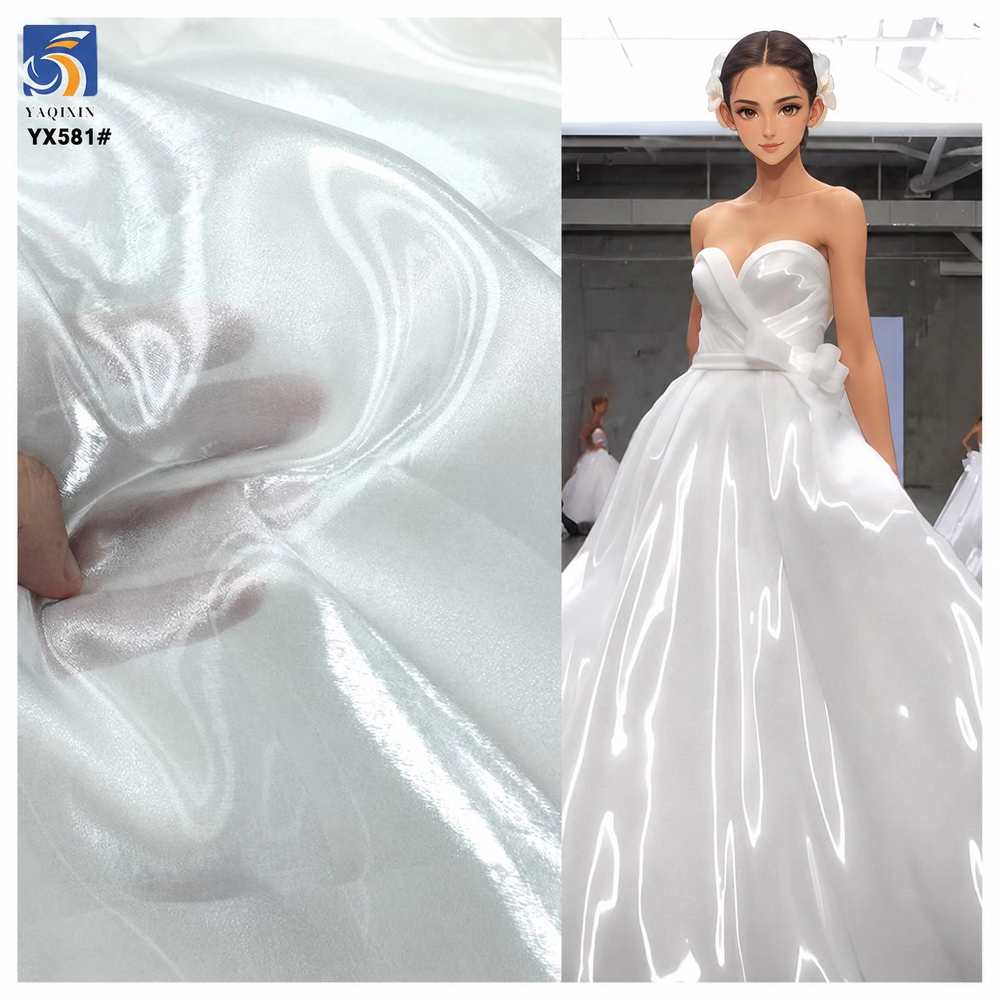

Tulle and organza can both create a sheer layer, but they do not create the same silhouette. The useful buying question is not simply which fabric looks more transparent in a photograph. It is whether the garment needs an open mesh that gathers into airy volume, or a woven sheer that gives the edge and surface more definition.
Start with tulle when the design needs visible mesh, soft layered volume or a light veil effect. Start with organza when the design needs a continuous sheer surface, a cleaner edge or more defined shape. This is a starting direction, not a universal rule: yarn, finish, weight and layer count can make one tulle or organza behave very differently from another.
Understand the construction before comparing the look
The clearest difference is the base construction. The current plain-tulle route in the YAQIXIN catalog is a knitted open mesh. Light passes through the spaces in the net, and several layers can build volume while the mesh remains visible at close range. The current organza routes are woven fabrics. Their yarns form a continuous sheer surface, so the buyer sees reflection, color and the shape of a fold differently.

That construction difference affects cutting, seam choices and the way volume is created. Tulle can be gathered without presenting a solid-looking fold, which is useful for veils, underskirt volume and light overlays. Organza can hold a more legible fold or panel shape because the surface is continuous. It can therefore be useful for sleeves, bows, skirts and overlays where the design depends on a crisp outline or visible sheen.
Do not treat the category name as a performance certificate. A soft-finished 30gsm organza is not equivalent to every other organza, and a 20gsm nylon tulle is not a proxy for decorated or hard tulle. Ask for the construction, composition, listed weight, usable width and finish of the exact article being sampled.
Compare drape, body and transparency together
Buyers often try to compare tulle and organza using weight alone. GSM helps describe mass per square metre, but it does not describe whether the surface is open or continuous, how the finish affects hand feel, or how a fold behaves. A 20gsm knitted tulle and a 30gsm woven organza are both light, yet they can produce noticeably different edges, reflections and layer definition.
| Decision point | Tulle starting direction | Organza starting direction | What to test on the sample |
|---|---|---|---|
| Surface | Visible open net or mesh | Continuous sheer woven surface | Appearance at normal viewing distance and close range |
| Volume | Airy volume built through gathering or layers | More defined folds, panels and edges | Pattern-sized drape or gathered section |
| Transparency | Changes strongly with mesh openness and layer count | Changes with weave, finish, color and layer count | One, two and planned production layers over the actual lining |
| Light response | Often visually quiet in a plain route; decoration can change this | Can show a smooth, shimmer, crepe or liquid-looking surface | Daylight, retail lighting and photography conditions |
| Edge and seam | Open construction may need application-specific edge control | Woven edge and fold behavior must be tested for the chosen finish | Cut edge, hem, seam allowance and pressing trial |
If the brief only says “transparent fabric,” the supplier still cannot know which result the designer expects. Add one functional phrase: “soft veil with low visual weight,” “crisp translucent sleeve,” “gathered skirt volume,” or “fluid glossy overlay.” That phrase is more useful than attaching a generic reference image without explaining the placement.
Choose by garment placement, not only by garment name
A single dress can use both materials. Tulle may create the veil, underskirt volume or a soft mesh overlay, while organza may form a sleeve, bow, shaped overskirt or translucent panel. Decide fabric by placement because the same garment has areas with different requirements.
Veils and soft bridal layers
For a veil, begin with a light plain tulle when the priority is an open, airy layer that does not hide the dress. 20D nylon plain tulle | YX1046 is listed as 100% nylon, 20gsm and 160cm wide, with a 10-yard MOQ. Use its sample to judge softness, mesh visibility, color against the gown, edge treatment and whether one or more layers produce the intended coverage.
Organza can still be considered for a bridal detail when a more continuous surface or a defined edge is intentional. It should not be substituted for veil tulle without testing, because the silhouette and light response may change even when both samples appear sheer when held up individually.
Structured overlays, sleeves and bows
For a translucent panel that must keep a clear shape, start with a woven organza route. lightweight sheer organza | YX309 is listed as 100% polyester, 30gsm, 150cm wide and woven, with a 10-yard MOQ. It is a useful first comparison for dresses, headdresses and layered details where the design needs a light continuous surface rather than an open mesh.
Fluid or light-catching overlays
“Organza” does not always mean one crisp hand. The current catalog also includes heavier and differently finished woven routes. liquid organza | YX581-2 is listed as 100% polyester, 60gsm and 150cm wide with a soft-shimmer finish. It can be sampled when a dress, skirt or overlay needs a more fluid, light-responsive appearance. Compare it against a plain lightweight organza rather than assuming the category name predicts the same drape.

Compare current catalog routes without confusing category and specification
The table below is based on current listed product data. It shows why a buyer should compare exact articles, not broad fabric labels. The examples are reference routes for sampling; suitability for a production garment still depends on the approved swatch and cut-and-sewn trial.
| Current route | Listed specification | Useful first application question | Approval focus |
|---|---|---|---|
| Plain tulle | YX1046 | 100% nylon; 20gsm; 160cm; knitted plain tulle | Do we need soft open-mesh volume or a light veil layer? | Mesh visibility, softness, layer count, edge treatment |
| 3D rose tulle | YX807 | 100% polyester; 130gsm; 140cm; knitted mesh tulle | Is the mesh a quiet base or the decorative focal surface? | Motif placement, seam allowance, raised surface, garment weight |
| Sheer organza | YX309 | 100% polyester; 30gsm; 150cm; woven | Do we need a light continuous sheer surface with defined folds? | Transparency, fold definition, lining color, cut edge |
| Crepe organza | YX1389 | 100% polyester; 50gsm; 150cm; woven | Does the design need a crepe-finished organza surface? | Texture, reflection, drape, color and seam trial |
| Liquid organza | YX581-2 | 100% polyester; 60gsm; 150cm; woven | Should the overlay look more fluid and light-responsive? | Movement, shimmer, handling marks, pressing and lining |
The 20gsm, 30gsm, 50gsm and 60gsm figures are useful identifiers, but they do not form a simple ladder from “soft” to “stiff.” Construction and finish change the result. Use the fabric GSM guide when interpreting weight, and record the exact product code with every approved sample so the comparison remains traceable.
Approve the layered result, not an isolated swatch
Sheer materials borrow color and visual depth from whatever sits behind them. A white sample over a white table, a skin-tone lining and a dark dress form can look like three different materials. Review each candidate over the actual lining color and in the planned number of layers.
- Pin a pattern-sized section rather than judging only a small hand swatch.
- Photograph one layer, two layers and the intended production layer count under the same lighting.
- Gather the tulle to the planned ratio; fold or shape the organza as the pattern requires.
- Check the cut edge, hem or binding method and sew at least one representative seam.
- Review color, surface and transparency from the garment's normal viewing distance.
- Record the product code, sample date, lining, layer count and decision instead of relying on an unlabelled photograph.
The fabric sample inspection checklist provides a fuller pre-production record. If the project is specifically comparing plain, glitter, embroidered and stretch mesh routes, the existing tulle selection guide covers that decision separately.
Send a comparison brief that suppliers can answer
Ask for tulle and organza samples against the same garment requirement. That makes the comparison useful and reduces the chance of receiving two attractive but unrelated swatches. Include:
- Garment type and exact placement, such as veil, outer skirt, sleeve, bow or overlay.
- Desired silhouette: soft fall, airy volume, defined fold, fluid shine or raised decoration.
- Target color and lining color, plus a reference image if available.
- Required transparency, planned layer count and whether the fabric touches skin.
- Composition preference, target weight or reference product code if already known.
- Usable width, sample quantity, estimated bulk quantity, destination and required delivery window.
A clear request could read: “We are developing a bridal overskirt over ivory satin. Please compare a soft open-mesh tulle and a lightweight woven organza in a similar ivory direction. We need to review two-layer transparency, gathered volume, hem behavior and a 150cm-or-wider cutting route before confirming the bulk quantity.” This gives the supplier a testable brief rather than asking which fabric is “better” in the abstract.
Buyer questions about tulle and organza
Is tulle or organza better for a wedding veil?
Light plain tulle is usually the more direct starting sample when the veil needs an airy open-mesh effect. Organza may be considered when a continuous sheer surface or more defined edge is part of the design. Confirm the choice over the dress and at the intended layer count.
Which fabric gives more volume?
Both can create volume, but the shape of that volume differs. Tulle commonly builds airy fullness through layers and gathering; organza can create more defined folds or shaped panels. The exact result depends on construction, finish, weight and pattern.
Can tulle and organza be used in the same garment?
Yes. They can solve different jobs in one design—for example, tulle for soft underskirt volume and organza for a defined sleeve or overskirt. Test the combined layers for color, seam bulk, movement and comfort.
Does a higher GSM mean organza is stiffer than tulle?
No. GSM measures mass per area, not stiffness. A useful comparison must also include knitted or woven construction, yarn, finish and the intended layer count.
What should be included in a wholesale sample request?
State the garment placement, desired silhouette, color and lining, transparency, layer count, width, sample and bulk quantities, destination and timeline. Add a product code or reference image when available, then approve the received sample before bulk ordering.
Ready to discuss a fabric brief?
Share your intended application, a reference image or swatch, quantity, and market. We can help you compare a stock or custom fabric route before you place a bulk order.
Start a fabric inquiry